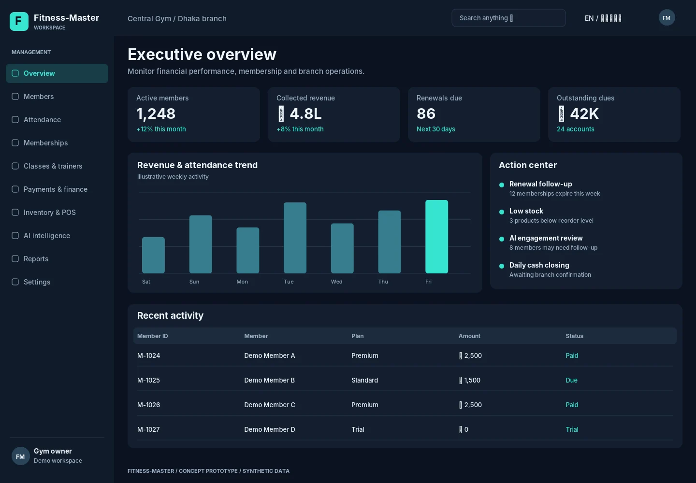
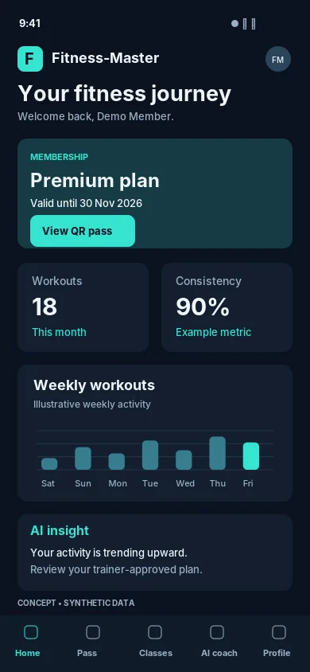
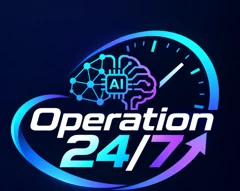

01 / OPERATIONS
Run a smarter gym.
Centralize memberships, renewals, payments and branch operations.
Member managementUnified records
AttendanceQR check-in
Business intelligenceEngagement trends
OperationsAutomated reminders
One connected platform for gym operators, trainers and members. Turn everyday fitness data into meaningful insights with secure cloud processing and personalized AI.


Product design concept • Illustrative data, not a live operational dashboard
Traditional fitness operations often rely on disconnected tools. Fitness-Master is designed to bring membership, activity and intelligence into one coherent experience.
Centralize memberships, renewals, payments and branch operations.
Contextual AI insights based on authorized activity, goals and approved knowledge.
How consistent have I been this month?
AI COACH · ILLUSTRATIVE RESPONSEYou logged 12 sessions. Review your weekly progress and discuss your next goal with your trainer.
Purpose-built views for operators, trainers and members.
Understand attendance patterns and member engagement.
Planned event-driven cloud processing, reporting and renewal reminders.
Explore our editable Figma designs and role-specific application concepts.
Review memberships, attendance, revenue and operational trends in a single executive workspace.
Open full Figma design ↗Concept UI · synthetic records
Our proposed architecture combines structured analytics, permission-aware retrieval and validated AI outputs.
Workout, attendance and membership events.
Cloud APIs, validation and SQL analytics.
LLM, contextual RAG and restricted MCP tools.
Validated insights for authorized users.
Server-side access control, tenant isolation and data minimization are proposed safeguards. AI recommendations are advisory, not medical diagnoses.
Proposed architecture; implementation and security controls require verification.
See the problem, solution, concept flow, AI approach and future roadmap in our hackathon submission video.
Cross-functional engineering for a scalable, responsible and accessible fitness platform.

International AI Builders Hackathon 2026
Technical Lead & Solution Architect Engineer
Team LeaderCybersecurity & Application Security Engineer
AI/ML & Intelligent Systems Engineer
Frontend Engineer & UX Architect
Cloud Infrastructure & Site Reliability Engineer
Backend & Data Engineering Specialist
Discover the design, review the project or start a conversation with our team.
Private repository access is subject to authorization and identity verification.